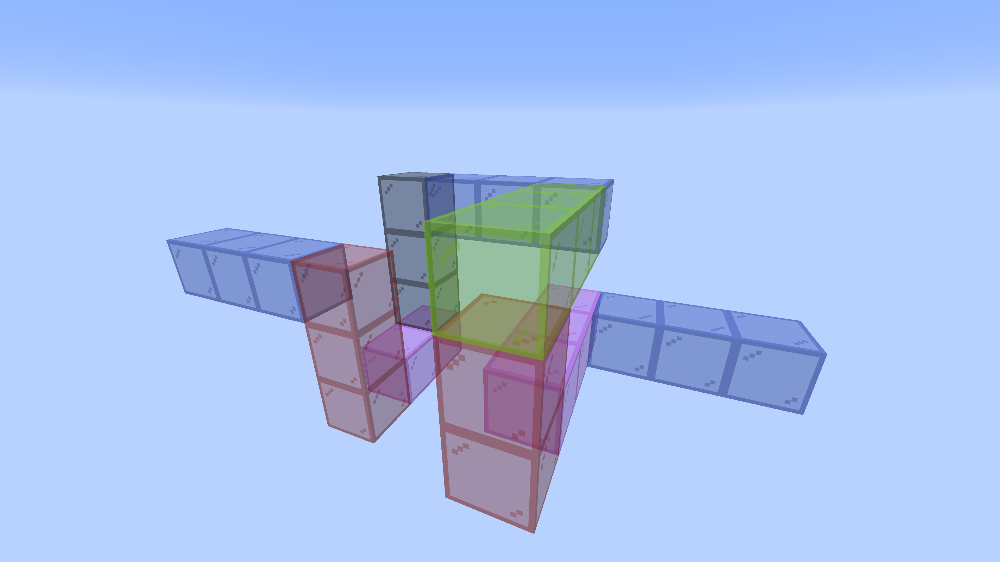

The switchback trumpet
A trumpet bore that folds back on itself twice. 22 blocks, 352mm of centreline, six sections, no elbows and no contact — the shortest lattice walk in the repository, and the one to cut first if you want to find out whether the joints go together before you commit a metre of ply to it.
Turn it → The viewer is a page of its own, not a frame in this one: drag to rotate, and the slider reveals the bore a block at a time in the order you would glue it.

The walk is the whole design
N N1 W3 U2 E3 N3 D3 W2 U3 N1The first letter is the way you face at the mouth; every term after it turns where you stand and then travels that many blocks. So the bore is 1 + the sum of the numbers — 21 + 1 = 22. Axes are Minecraft's: U/D are +Y/−Y, N is −Z, S is +Z, E is +X, W is −X.
The walk is kept in ../tools/walks/coil_fold2.txt, and regress.py beside it names this folder as where its cut files land. The viewer page carries the same string, and the generator will read either, but they are only equal because the page was generated from the file. Read it out of the file.
No lead-out, and why that costs nothing
A walk may end with a bare letter naming the way you leave. This one does not. A term whose direction matches your heading does not turn, and a bare term carries no distance, so after N1 a trailing N would only restate a heading the walk already has. Written both ways on 2026-08-29, the six SVGs came back byte-identical. It would matter if the exit differed from the last term: N1 U turns the final block and buys an elbow.
The numbers
| blocks | 22 |
| centreline | 352mm |
| sections | 6 |
| parts | 40, over 6 sheets |
| bounding box | 64 × 64 × 96mm — 4 × 4 × 6 blocks |
| airway | 10mm square, constant |
| block pitch | 16mm — 10mm of air in 3mm walls |
| elbows | none |
| contact | none |
| legs | north 6, west 5, up 5, east 3, down 3 |
A block is 16mm, not 10. The bore is the air; the block is the air plus two walls. The two numbers are 6mm apart, and a folder named for one and gated at the other cuts a tube nobody asked for. A run of N blocks is 16N mm, which is where 352 comes from.
The six sections
Numbered from the mouthpiece; assemble in order. A section is one flat snake, so it is one SVG, and every part is engraved with its section number because the sections only go together one way.
| # | blocks | in → out | plate | shape | parts | sheet |
|---|---|---|---|---|---|---|
| 1 | 1–3 | N → W | 2×2 | BDL~a | 6 | 241 × 56mm |
| 2 | 4–8 | W → E | 2×3 | BLUUR | 8 | 343 × 72mm |
| 3 | 9–11 | E → N | 2×2 | BRD | 6 | 253 × 56mm |
| 4 | 12–14 | N → D | 2×2 | BDL | 6 | 247 × 59mm |
| 5 | 15–19 | D → U | 3×2 | BDLLU | 8 | 369 × 59mm |
| 6 | 20–22 | U → N | 2×2 | BRD~b | 6 | 253 × 56mm |
~a and ~b are the plain ends — the only two faces that do not couple to another section, and the ones the mouthpiece and the bell land on. The filenames say buttin and buttout.
Sections 2 and 5 are the folds: five blocks each, carrying a hairpin internally rather than stranding its turn as a separate piece. Sections 3 and 6 are the same shape, BRD, cut twice.
The cut files
In ../parts/bore/concept/walk/no-elbows/coil/no-contact/fold2/bore/cut-files/:
bore10-coil-fold2-01of06-bend-DL-buttin-cut-files.svg
bore10-coil-fold2-02of06-bend-LUUR-cut-files.svg
bore10-coil-fold2-03of06-bend-RD-cut-files.svg
bore10-coil-fold2-04of06-bend-DL-cut-files.svg
bore10-coil-fold2-05of06-bend-DLLU-cut-files.svg
bore10-coil-fold2-06of06-bend-RD-buttout-cut-files.svgEvery file is millimetre-true at 1 user unit = 1mm. Blue engraves, then black cuts — blue writes the section number on every part, black frees it.
Rebuild it
The generator lives in ../tools. Report only, writing nothing:
python3 tools/bore_split.py "N N1 W3 U2 E3 N3 D3 W2 U3 N1" --bore=10 --no-write --refuse-elbows--bore=10 is the airway; the 16mm block follows from it at 3mm ply, and --refuse-elbows makes the elbow-free claim a gate rather than a reading. Writing rewrites every sheet in the folder, so it runs under the venv python that has the gate's dependencies:
cd tools && ~/Software/boxes/venv/bin/python bore_split.py \
../parts/bore/concept/walk/no-elbows/coil/no-contact/fold2/bore/bore.html \
--write ../parts/bore/concept/walk/no-elbows/coil/no-contact/fold2/boreStretched, the same walk is longer
Leave the walk alone and lengthen only the blocks that run straight, and the tube grows without the shape changing. --straight=30 turns this 352mm into 548mm on the same six turns. The built instrument is that idea taken three turns further — see the trumpet writeup.
The two ends
Only the tube belongs to an instrument. Neither the mouthpiece nor the bell is touched by the way a bore turns, and every bore here is on the same 10mm channel, so one of each serves all of them — the bell and the mouthpiece.
More, and licence
The trumpet writeup — the idea, the notation, the gate, and the one bore that exists as an object.
The rest of the build files — every instrument, each with its own writeup.
Released under CC0 1.0.